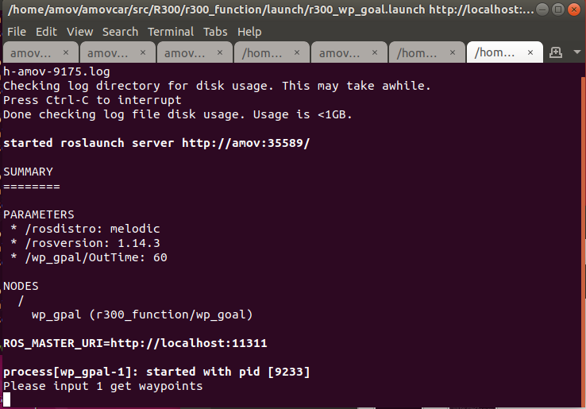

导航
室内导航
注解
在进行导航功能之前，确保您已经完成 SLAM 相关工作，有一张地图。
将小车上电，等待板载计算机、飞控、移动端RTK、移动端Homer启动完成
打开遥控器
在PC上打开 No Machine 软件，输入 192.168.1.14 远程连接到板载计算机。
注解
板载计算机的固定IP，取决您如何设置 板载计算机IP
输入密码 amov 登录到板载计算机
打开板载计算机桌面的 sh 文件夹后，右键选择 open terminal
输入命令
bash r300_navigation_indoor.sh启动室内导航建图脚本。在启动的 rviz 界面顶部的菜单栏中，选择 2D Pose Estimate，将机器人放置在地图中的实际位置，然后用遥控器控制E300前后左右稍微移动，待R300周围的粒子聚集即可。
在启动的 rviz 界面顶部的菜单栏中，选择 Navigation Goal，单击地图以设置机器人的目的地，然后将绿色箭头指向机器人在目标点将要面对的方向。
将遥控器上的档杆SWB拨至顶部，R300将会开始导航
室外航点规划及避障
将小车上电，等待板载计算机、飞控、移动端RTK、移动端Homer启动完成
打开遥控器
在PC上打开 No Machine 软件，输入 192.168.1.14 远程连接到板载计算机。
注解
板载计算机的固定IP，取决您如何设置 板载计算机IP
输入密码 amov 登录到板载计算机
在PC上打开 Mission Planner 软件，在右上角选择连接方式为 TCP，波特率为 57600
在弹出的对话框输入飞控IP地址 192.168.1.11，端口号为 8080
飞控连接上以后，等待GPS进入 rtk fixed状态，并且EKF没有报红。如下图所示:
点击Mission Planner工具栏上的 飞行计划，在地图界面规划航点，然后点击右边的写入航点按钮
打开板载计算机的终端
输入命令
roscd r300_function/sh && bash r300_navigation_wp_goal.sh启动室外航点规划及避障功能。打开一个新的终端，输入命令
rosservice call /mavros/mission/pull打开第10步启动的终端界面，在最后一个标签页中， 先输入1获取航点信息，等获取到航点信息后，再次输入1启动，如下图所示
将遥控器上的档杆SWB拨至顶部，让R300受板载计算机的控制，开始执行航点规划
注解
使用室外航点规划及避障，需要更新最新版本的代码。代码地址见 gitee，选择分支为 v1.0-beta